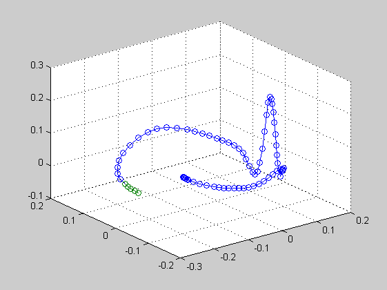

% ECGSYN % Version 0.3: Baseline drift that gave the R wave. % Version 0.2: 3D Sim % Version 0.1: Crude Simulation % 2d Phase and State Trajectories plot clear all; clc;
t0 = 0; tf = 1; x0 = -0.1; y0 = 0; z0 = 0; options = odeset('OutputFcn',@odephas3); figure; [T,Y] = ode45(@ecgsynSolver, [t0 tf], [x0 y0 z0], options); figure; plot(T,Y(:,1),'-', T,Y(:,2),'-', T,Y(:,3),'.-'); title('State Trajectories as a function of Time'); legend('state x','state y', 'state z'); grid on; xlabel('Time \rightarrow '); ylabel('x(t), y(t) & z(t) \rightarrow '); % text(-pi/4,sin(-pi/4),'\leftarrow % sin(-\pi\div4)','HorizontalAlignment','left')